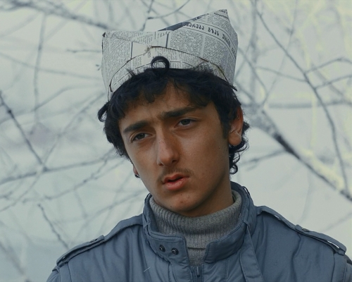

Меня зовут Гедеван Александрович Алексидзе

Я пацак с планеты Земля, я сам из Батуми. Студент-первокурсник текстильного института города Иваново (до текстильного пробовал поступить в МГИМО).
Я приехал в Москву, чтобы передать профессору Рогозину скрипку (итальянскую, XVIII века), забытую им после обеда.
Я имею некоторые познания в иностранных языках, владею английским, французским… слабо. Чатланин Уэф так охарактеризова эти мои познания: «А этот пацак всё время говорит на языках, продолжения которых не знает!».
Скромный и тихий с виду, но когда кто-то оскорбляет меня по-грузински, я мигом проявляю вспыльчивость.